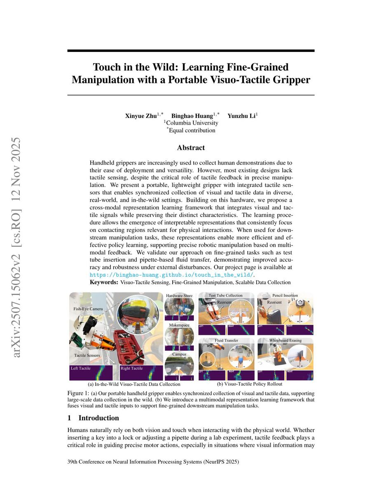

Touch in the Wild: Learning Fine-Grained Manipulation with a Portable Visuo-Tactile Gripper
Columbia University
Conference on Neural Information Processing Systems (NeurIPS) 2025
Best Demo Award — RSS 2025 Workshop on Robot Hardware-Aware Intelligence

Abstract
Handheld grippers are increasingly used to collect human demonstrations due to their ease of deployment and versatility. However, most existing designs lack tactile sensing, despite the critical role of tactile feedback in precise manipulation. We present a portable, lightweight gripper with integrated tactile sensors that enables synchronized collection of visual and tactile data in diverse, real-world, and in-the-wild settings. Building on this hardware, we propose a cross-modal representation learning framework that integrates visual and tactile signals while preserving their distinct characteristics. The learning procedure allows the emergence of interpretable representations that consistently focus on contacting regions relevant for physical interactions. When used for downstream manipulation tasks, these representations enable more efficient and effective policy learning, supporting precise robotic manipulation based on multimodal feedback. We validate our approach on fine-grained tasks such as test tube insertion and pipette-based fluid transfer, demonstrating improved accuracy and robustness under external disturbances. Our project page is available at https://binghao-huang.github.io/touch_in_the_wild/ .